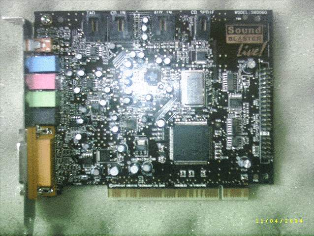
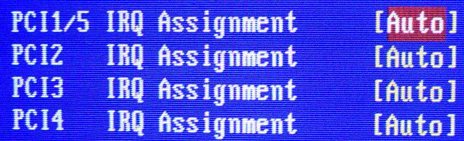
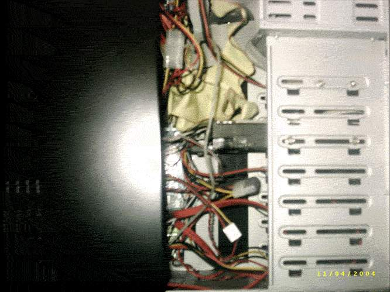
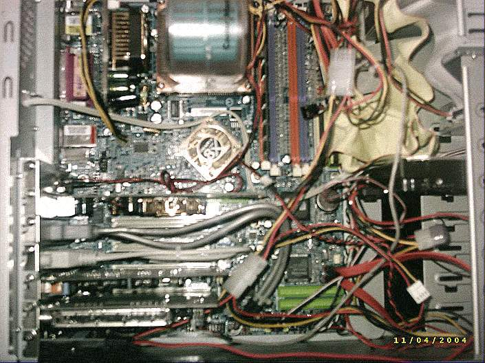
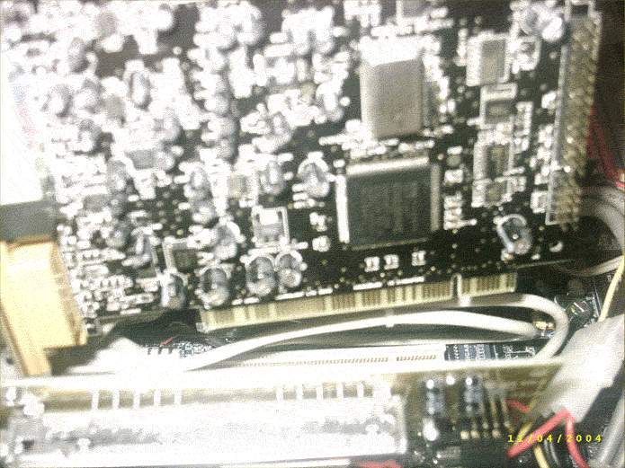
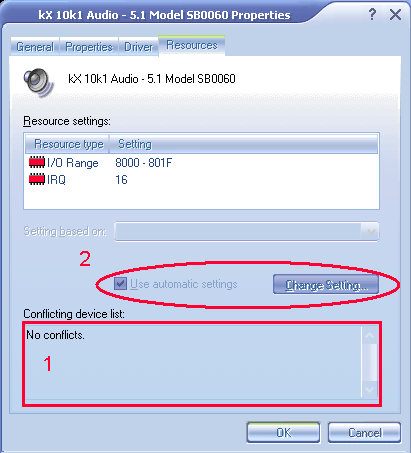

This part of the guide will show you how to physically install the Soundblaster
card into your computer .
Note:
Although the manual that comes with the Soundblaster card shows basic
installation methods, and may seem straight-forward even without these instructions,
this part of the guide will describe how to do so in a way that bypasses possible
IRQ conflicts and interference to analog audio, causing noise.
I apologise for the poor quality of these images, but these are only to complement
my guide and not to showcase. The images are low quality to reduce the file
size and download times for users with slow connections.
This installation guide uses the Soundblaster Live! 5.1 soundcard as an example,
and as I do not have add-ons such as the Live! Drive and Digital Daughter
Card, I cannot provide instructions on how to install these, however, the instructions
that come with the manual should be sufficient.

You will need a screwdriver.
Checking BIOS for IRQ assignments
Installing the card in the PCI slot
Connecting in Speakers and Microphones, etc.
Troubleshooting
Checking BIOS for IRQ assignments
Note: Those with high-end graphics card where the cooling system takes up
the first PCI slot, then this does not concern you.
This step is important, as some motherboards may lock 2 PCI slots at the same
IRQ, which if both slots are occupied and one of those slots is occupied by
the Soundblaster card, it will cause a whole series of errors.
You will need to check you motherboard's manual to find how to access the PCI
IRQ assignments

As you can see here, with the menu item "PCI 1/5", PCI slots 1 and 5 are locked
at the same IRQ, this means that you should not place the card in either
of these slots unless both are unoccupied - but placing a card here makes
more work when you need to add another PCI card into the board, you have
to move the Soundblaster card away from these slots.
Installing into PCI slots 2, 3 or 4 will ensure that the card works perfectly,
provided there are no conflicts due to other devices that may be built
into the motherboard and attached to the PCI bus, such as RAID and SATA
chips.
Top Index
Installing the card in the PCI slot
First touch an exposed metal part of your case to get rid of static
electricity, then remove the power cord, and all other cables attatached.

Remove the side cover to your
computer.
You may need the screwdriver for this.

Lay the case flat, with the AGP/PCI expansion cards vertical.

Install the live card into PCI slot 2,3 or 4 (or one that does not have a shared
IRQ)
Secure the card to the case with a screw
Connect any add-on cards as instructed in the manual.
Top Index
Connecting Speakers
and Microphones, etc.

1.Connect the Front Speakers to the black* (rear) port.
2.
Connect the rear speakers
to the green* (front) port. (reason for this swap is explained here).
3. Connect
microphone to the pink* port.
4. Connect the
line in to the blue* port.
5^. Connect
the centre/LFE OR connect digital speaker to the orange* (centre/LFE/digital)
port.
6^. Connect joystick/game pad or Midi converter cable to the UART
^Note: Some cards may not have these connectors, or may have different connectors.
Check your manual to find out which connectors you have.
Note: Some of the higher end cards in each series feature Gold Plated
Connectors, and you need to be careful which port you are using.
Top Index
Troubleshooting
Note: This step requires you have installed the kX Project Drivers.
If the kX Mixer fails to load on start up and an error message appears, or
sound does not play correctly, open the Control Panel and open the System Control
Panel.

Click the "Hardware"
tab and then click the "Device Manager" tab.
(On earlier Windows
versions simply click the "Device Manager" tab.

If the kX Audio device(1)
shows an error symbol, like the ones on the CD drives(2), select the kX Audio
device and click the properties button(3).

If the Conflicting Device
list(1) shows conflicts, attempt to change the settings(2) (It is currently
disable on my system)
If this is impossible it may be due to the shared
PCI IRQ issue mentioned earlier on this page, move the Soundblaster card to
another PCI slot and test.
If you still cannot get the card to work, search the kX
Forums.
Top Index
kX Guide © 2004 by Chris Stannard, a kX
user. All rights reserved.